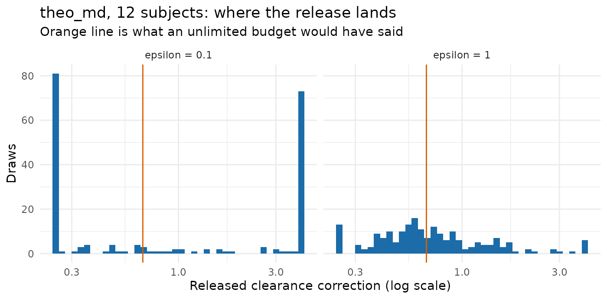

Evaluating calibration on public data
Andrew Stein
Source:vignettes/articles/calibrated-public-data-examples.Rmd
calibrated-public-data-examples.RmdThis article asks one question: at a privacy budget somebody could actually defend, what does a calibrated release produce on a study the size pharmacometrics actually runs?
The short answer is that on a phase 1 cohort it produces noise, and the package says so before you spend anything. The longer answer is worse than that, and is the reason this article exists: a release that conveys nothing is not the same as no release. It moves the generated level to a prior boundary, and a boundary is further from the study than the prior’s centre would have been.
Everything here uses the real OpenDP backend.
backend = "public" adds no noise at all, so it can
demonstrate the correction mechanism and nothing about epsilon. The
studies are public, so no confidential data is at risk; the noise is
genuine.
And the noise is never user-seeded, so single draws differ between builds of this page. Every claim below is therefore made over 200 draws rather than one, and computed here rather than written into the prose.
data("theo_md", package = "nlmixr2data")
theo_md <- as.data.frame(theo_md)
mixroute <- as.data.frame(mixroute_sim)
priors <- pmx_priors(pk = pmx_prior(
c(1 / 4, 4),
source = "scaling literature: the prediction is good to about four-fold"
))Ask before spending
pmx_preflight() reads no data and costs nothing. It
reports
f = d / (epsilon * N)the fraction of the prior’s width that survives as noise, where
d is the number of quantities released — two here, a
correction and a subject count.
grid <- expand.grid(n_subjects = c(12, 30, 60, 90, 180, 500),
epsilon = c(0.1, 0.5, 1))
grid <- do.call(rbind, lapply(seq_len(nrow(grid)), function(i) {
pf <- pmx_preflight(priors, epsilon = grid$epsilon[i],
n_subjects = grid$n_subjects[i])
data.frame(N = grid$n_subjects[i], epsilon = grid$epsilon[i],
f = round(pf$f, 3),
expected_fold_error = pf$table$expected_fold_error[1],
verdict = pf$verdict)
}))
knitr::kable(grid[order(grid$epsilon, grid$N), ], row.names = FALSE,
caption = "What a budget buys, before any of it is spent")| N | epsilon | f | expected_fold_error | verdict |
|---|---|---|---|---|
| 12 | 0.1 | 1.667 | 4.000000 | worthless |
| 30 | 0.1 | 0.667 | 4.000000 | marginal |
| 60 | 0.1 | 0.333 | 2.519842 | worthwhile |
| 90 | 0.1 | 0.222 | 1.851749 | worthwhile |
| 180 | 0.1 | 0.111 | 1.360790 | worthwhile |
| 500 | 0.1 | 0.040 | 1.117287 | consider a smaller epsilon |
| 12 | 0.5 | 0.333 | 2.519842 | worthwhile |
| 30 | 0.5 | 0.133 | 1.447269 | worthwhile |
| 60 | 0.5 | 0.067 | 1.203025 | consider a smaller epsilon |
| 90 | 0.5 | 0.044 | 1.131140 | consider a smaller epsilon |
| 180 | 0.5 | 0.022 | 1.063551 | consider a smaller epsilon |
| 500 | 0.5 | 0.008 | 1.022428 | consider a smaller epsilon |
| 12 | 1.0 | 0.167 | 1.587401 | worthwhile |
| 30 | 1.0 | 0.067 | 1.203025 | consider a smaller epsilon |
| 60 | 1.0 | 0.033 | 1.096825 | consider a smaller epsilon |
| 90 | 1.0 | 0.022 | 1.063551 | consider a smaller epsilon |
| 180 | 1.0 | 0.011 | 1.031286 | consider a smaller epsilon |
| 500 | 1.0 | 0.004 | 1.011152 | consider a smaller epsilon |
Read the epsilon = 0.1 block first. It is worthless at
12 subjects, marginal at 30, and worth making from about 60 up. That is
the whole feasibility story for this mode, and it is available without
touching the data.
The two studies below sit on either side of that line:
theo_md has 12 subjects and mixroute_sim has
90.
theo_md at 12 subjects: what a worthless verdict looks like
theo_roles <- pmx_roles(id = "ID", time = "TIME", dv = "DV", amt = "AMT",
evid = "EVID", cmt = "CMT")
theo_model <- pmx_structural_model(
pk = "1cmt_oral", typical = c(cl = 6, v = 35, ka = 1.5),
source = "illustrative allometric scaling; never fitted to theo_md"
)
rich <- c(0, 0.25, 0.5, 1, 2, 4, 7, 9, 12, 24)
theo_design <- pmx_trial_design(
dose_levels = 320, cohort_sizes = 12,
sampling = list(rich, 0, NULL, NULL, NULL, NULL, rich),
n_doses = 7, dose_interval = 24,
source = "illustrative protocol: 320 mg daily, sampled on days 1 and 7"
)
pmx_preflight(priors, epsilon = 0.1, n_subjects = 12)
#> Pre-flight: d = 2, epsilon = 0.1, N = 12 -> f = 1.667
#> quantity prior_fold f expected_fold_error
#> pk 16 1.666667 4
#>
#> Verdict: worthless
#> The noise is as wide as the prior. This release would tell you nothing you did not already assume.
#> Use prior-mode generation instead, or raise epsilon only if governance allows.The helper below draws one release and reports what left the study and what the generated level came out at. It suppresses warnings because at this epsilon nearly every draw emits one, and the warnings are the finding rather than a problem.
median_dv <- function(data) {
value <- suppressWarnings(as.numeric(data$DV[data$EVID == 0]))
stats::median(value[is.finite(value) & value > 0])
}
draw_release <- function(data, roles, model, design, epsilon, seed) {
synthetic <- suppressWarnings(synpmx_calibrated(
data = data, roles = roles, model = model, design = design,
priors = priors, epsilon = epsilon, seed = seed, backend = "opendp"
))
release <- attr(synthetic, "synpmx_release")
data.frame(
correction = release$corrections$pk$factor,
at_boundary = isTRUE(release$corrections$pk$at_prior_boundary),
released_n = release$private_subject_count,
median_dv = median_dv(synthetic)
)
}
draws <- function(data, roles, model, design, epsilon, n = DRAWS) {
do.call(rbind, lapply(seq_len(n), function(i) {
draw_release(data, roles, model, design, epsilon, seed = i)
}))
}
theo_01 <- draws(theo_md, theo_roles, theo_model, theo_design, 0.1)
# What an unlimited budget would have said, for reference: the same fit with
# the no-noise backend. This is not a release, it is the target.
theo_noiseless <- attr(suppressWarnings(synpmx_calibrated(
data = theo_md, roles = theo_roles, model = theo_model,
design = theo_design, priors = priors, epsilon = 1, seed = 1,
backend = "public", public_source = TRUE
)), "synpmx_release")$corrections$pk$factor
round(c(noiseless_correction = theo_noiseless,
median = stats::median(theo_01$correction),
q25 = stats::quantile(theo_01$correction, 0.25, names = FALSE),
q75 = stats::quantile(theo_01$correction, 0.75, names = FALSE)), 3)
#> noiseless_correction median q25
#> 0.669 0.639 0.250
#> q75
#> 4.000
mean(theo_01$at_boundary)
#> [1] 0.77The interquartile range is the whole prior. Not the tails — the middle half of releases runs from one end of the assumed range to the other, because most of them are clipped to an end. The proportion pinned at a boundary is the second number above, and the package warns on every one of those draws.
The released subject count behaves the same way. The study has twelve subjects:
round(stats::quantile(theo_01$released_n, c(0.05, 0.5, 0.95), names = TRUE), 1)
#> 5% 50% 95%
#> 1.0 11.3 54.8A worthless release is worse than no release
Prior-only generation is the thing calibration has to beat: the same
public model, no budget spent, epsilon = 0. So compare them
on the same footing, as the typical factor by which the generated level
misses the study’s.
source_level <- median_dv(theo_md)
prior_only <- vapply(1:40, function(i) {
median_dv(synpmx_prior(theo_model, theo_design, theo_roles,
n_subjects = 12, seed = i))
}, numeric(1))
theo_1 <- draws(theo_md, theo_roles, theo_model, theo_design, 1)
typical_fold <- function(level) exp(mean(abs(log(level / source_level))))
comparison <- data.frame(
mode = c("prior only (epsilon = 0)", "calibrated, epsilon = 0.1",
"calibrated, epsilon = 1"),
median_level = round(c(stats::median(prior_only),
stats::median(theo_01$median_dv),
stats::median(theo_1$median_dv)), 2),
typical_fold_error = round(c(typical_fold(prior_only),
typical_fold(theo_01$median_dv),
typical_fold(theo_1$median_dv)), 2)
)
knitr::kable(comparison, row.names = FALSE,
caption = sprintf("theo_md, source median %.2f mg/L",
source_level))| mode | median_level | typical_fold_error |
|---|---|---|
| prior only (epsilon = 0) | 3.28 | 1.81 |
| calibrated, epsilon = 0.1 | 4.41 | 2.58 |
| calibrated, epsilon = 1 | 4.30 | 1.55 |
At this cohort size spending 0.1 leaves the output further from the study, on average, than spending nothing. The mechanism is the boundary clipping: prior-only generation sits wherever the assumed clearance puts it, while a censored release multiplies that by whichever end of the prior the noise fell against.
mean(abs(log(theo_01$median_dv / source_level)) >
abs(log(stats::median(prior_only) / source_level)))
#> [1] 0.455That fraction of draws is worse than not having asked.
Note the trap in the middle column. The median level at
epsilon = 0.1 looks closer to the study than prior-only
generation does, while its typical error is larger. Draws pile up at
both ends of the prior and their median lands between them, near the
study by coincidence. A summary that reported only the median would
recommend exactly the wrong thing.
frame <- rbind(
data.frame(mode = "epsilon = 0.1", correction = theo_01$correction),
data.frame(mode = "epsilon = 1", correction = theo_1$correction)
)
ggplot2::ggplot(frame, ggplot2::aes(correction)) +
ggplot2::geom_histogram(bins = 40, fill = "#1B6CA8") +
ggplot2::geom_vline(xintercept = theo_noiseless, colour = "#D95F02") +
ggplot2::facet_wrap(~ mode) +
ggplot2::scale_x_log10() +
ggplot2::labs(
x = "Released clearance correction (log scale)", y = "Draws",
title = "theo_md, 12 subjects: where the release lands",
subtitle = "Orange line is what an unlimited budget would have said"
) +
ggplot2::theme_minimal()
mixroute_sim at 90 subjects: where the budget starts working
Same epsilon, same prior, seven and a half times the cohort. This study’s generating model is documented, so the public input is the truth rather than a guess and nothing here is confounded by a bad prior.
mixroute_roles <- pmx_roles(
id = "ID", time = "TIME", nominal_time = "NTIME", dv = "DV", amt = "AMT",
evid = "EVID", cmt = "CMT", cens = "CENS"
)
mixroute_model <- pmx_structural_model(
pk = "1cmt_oral", typical = c(cl = 2, v = 10, ka = 0.5),
source = "the documented generating truth of the mixroute_sim fixture"
)
mixroute_design <- pmx_trial_design(
dose_levels = 100, cohort_sizes = 90, sampling = c(0, 1, 2, 3, 7),
n_doses = 3, dose_interval = 7,
source = "the fixture's protocol: 100 mg on days 0, 7 and 14"
)
pmx_preflight(priors, epsilon = 0.1, n_subjects = 90)
#> Pre-flight: d = 2, epsilon = 0.1, N = 90 -> f = 0.222
#> quantity prior_fold f expected_fold_error
#> pk 16 0.2222222 1.851749
#>
#> Verdict: worthwhile
#> The release meaningfully narrows the prior.
mixroute_01 <- draws(mixroute, mixroute_roles, mixroute_model,
mixroute_design, 0.1)
mixroute_noiseless <- attr(suppressWarnings(synpmx_calibrated(
data = mixroute, roles = mixroute_roles, model = mixroute_model,
design = mixroute_design, priors = priors, epsilon = 1, seed = 1,
backend = "public", public_source = TRUE
)), "synpmx_release")$corrections$pk$factor
round(c(noiseless_correction = mixroute_noiseless,
median = stats::median(mixroute_01$correction),
q25 = stats::quantile(mixroute_01$correction, 0.25, names = FALSE),
q75 = stats::quantile(mixroute_01$correction, 0.75, names = FALSE)), 3)
#> noiseless_correction median q25
#> 1.166 1.076 0.647
#> q75
#> 1.740
mean(mixroute_01$at_boundary)
#> [1] 0.175The median release is close to the noiseless one and the interquartile range is a real interval rather than the prior’s two ends. Most draws are not censored. The release is doing something.
It is still not a measurement. The tails reach the prior boundary, so a single release at this epsilon can be several-fold off, and there is no way to tell from the release itself which kind of draw you have.
round(stats::quantile(mixroute_01$released_n, c(0.05, 0.5, 0.95)), 1)
#> 5% 50% 95%
#> 54.1 88.9 136.7Ninety subjects, released as a range that wide. Anything downstream that reads the cohort size — a power calculation, a per-arm summary — is reading noise.
Does the preflight predict what the draws do?
The point of pmx_preflight() is to answer the
feasibility question without spending. Whether it can be trusted is
checkable: compare its expected fold-error against the realized error of
the draws above.
realized <- function(drawn, noiseless) {
stats::median(exp(abs(log(drawn$correction / noiseless))))
}
check <- data.frame(
study = c("theo_md", "mixroute_sim"),
N = c(12, 90),
predicted = round(
c(pmx_preflight(priors, 0.1, 12)$table$expected_fold_error[1],
pmx_preflight(priors, 0.1, 90)$table$expected_fold_error[1]), 2),
realized = round(c(realized(theo_01, theo_noiseless),
realized(mixroute_01, mixroute_noiseless)), 2)
)
knitr::kable(check, row.names = FALSE,
caption = "Expected against realized fold-error, epsilon = 0.1")| study | N | predicted | realized |
|---|---|---|---|
| theo_md | 12 | 4.00 | 2.68 |
| mixroute_sim | 90 | 1.85 | 1.75 |
It predicts the right size on both studies and errs on the
pessimistic side, which is what its documentation claims for
f above roughly 0.25. So the feasibility question can be
answered from d, epsilon and the cohort size alone, before
any budget is committed and without the data.
Where to go next
-
vignette("calibrated-demo")— one study end to end, with the preflight before the spend. -
vignette("calibrated-algorithm")— every step, what each one spends, and where the sensitivity bound comes from. -
Feasibility
by cohort size — where
fcomes from and how it behaves. - Evaluating prior-only generation on public data — the other mode that reads nothing or nearly nothing, measured the same way.
- What differential privacy does and does not guarantee — the trust-boundary decision rule, and what a production release needs.